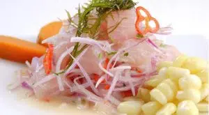
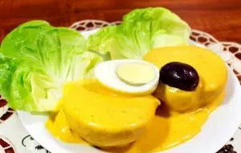

Nuestras Deliciosas Entradas

Causa Rellena
S/ 15.00
Comida fría, preparado abase de papa peruana andina. Con relleno cremoso de pollo,palta y mayonesa. Va acompañado de aceitunas y huevo duro.

Ceviche
S/ 18.00
Comida fría a base de pescado. Va acompañado con cebolla,ajíes. pra darle mas sabor al paladar, contine unas rodajas de camote dulce y choclo sancochado.

Nombre Entrada 3
S/ 12.50
Plato frío y cremoso a base de queso y ají amarillo . va acompañado de huevo, aceitunas y lechuga.

S/ 15.00
Plato frío a base de choclo,habas,cebolla,tomate,queso, culantro y jugo de limón. Comida muy fesca con aroma agradable.